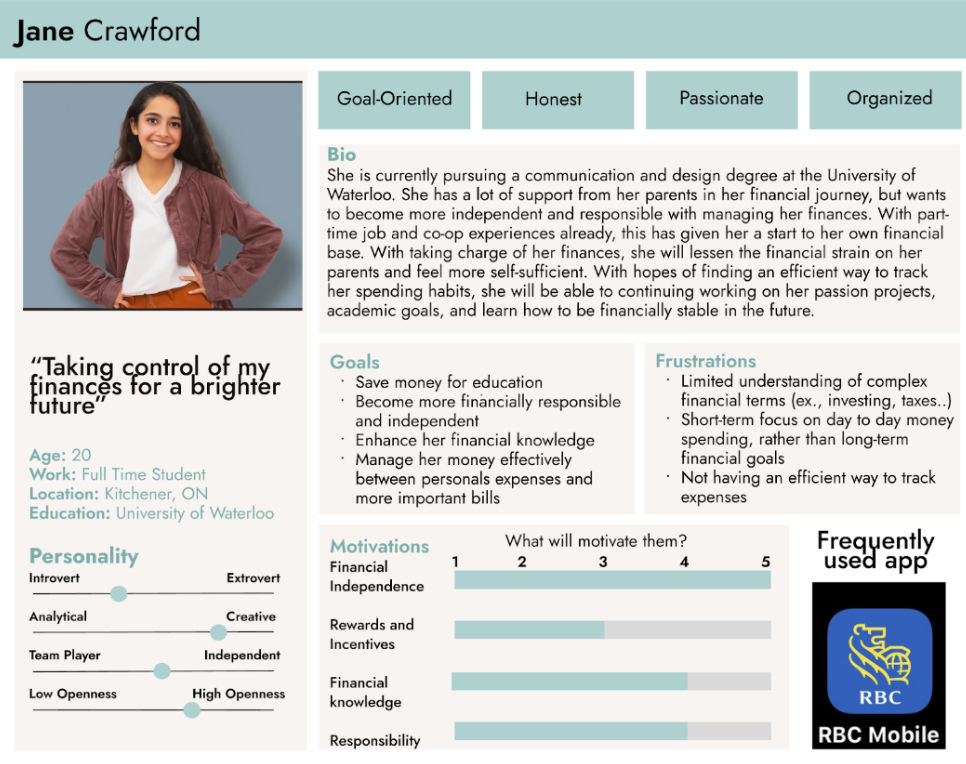
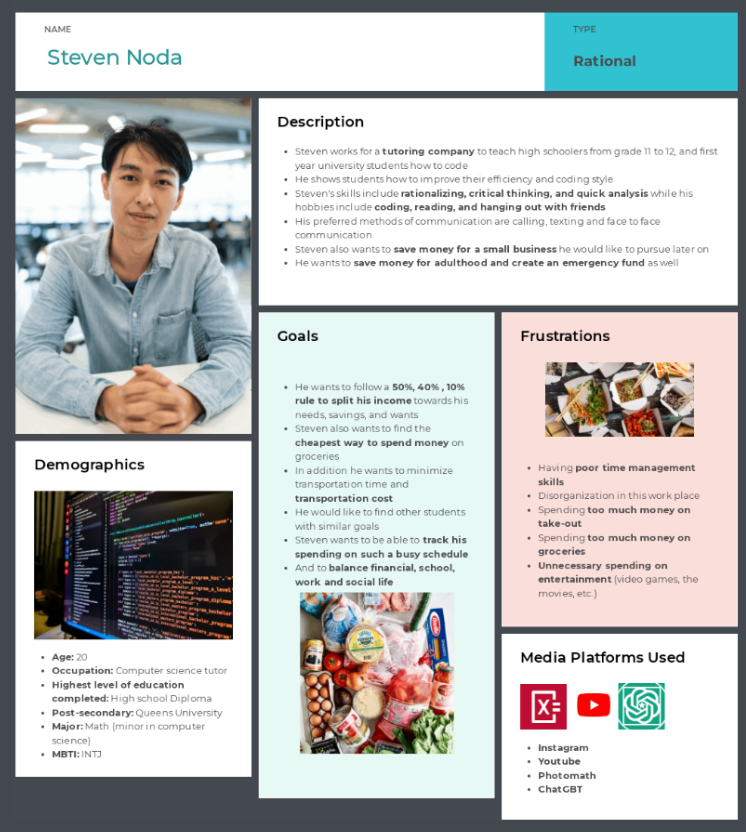
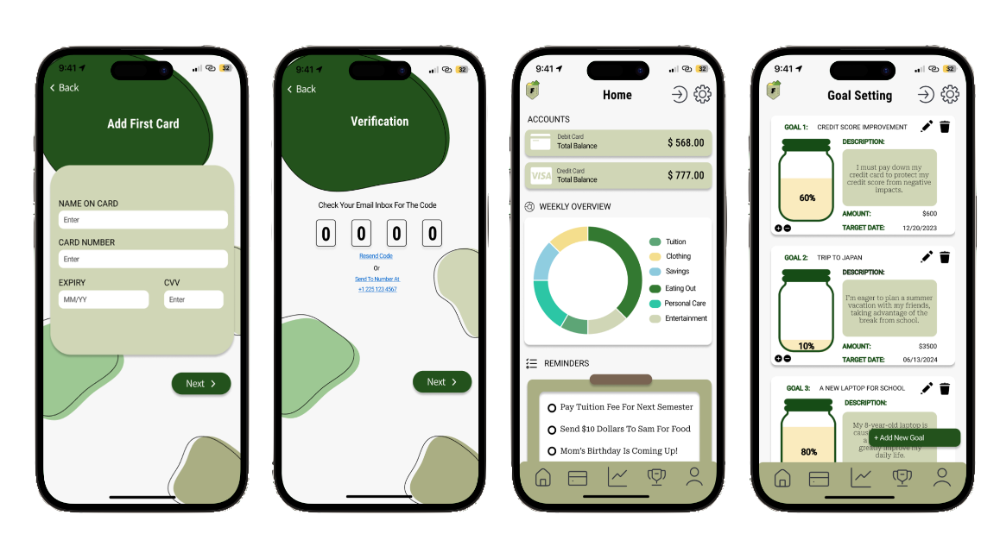
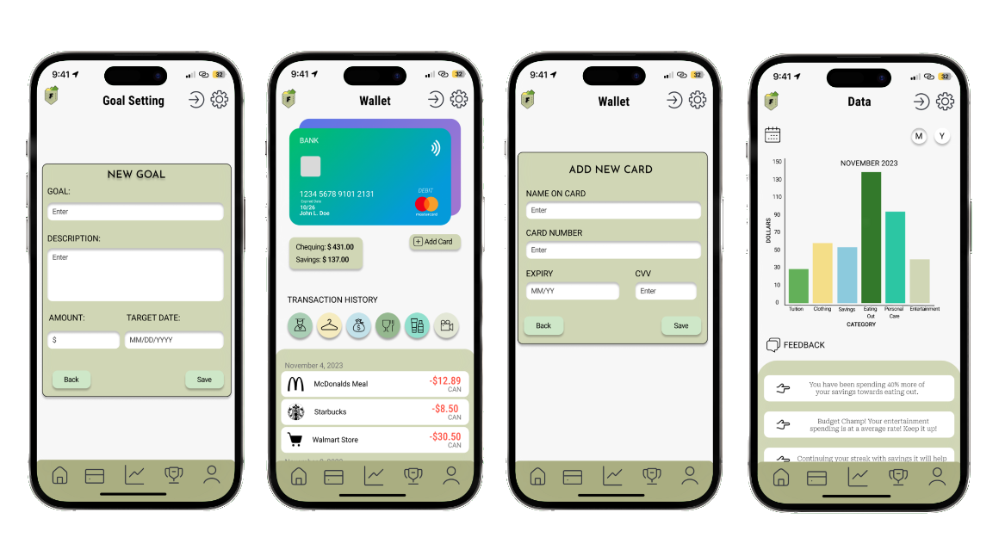
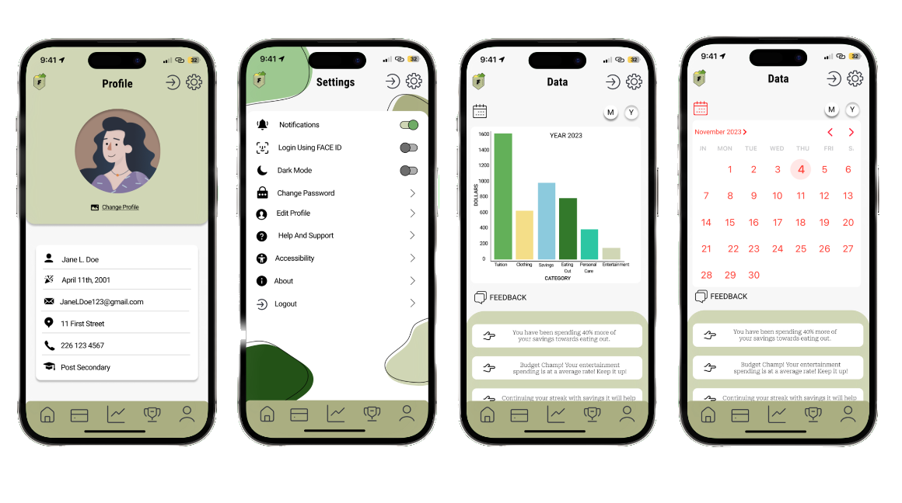

A Simple Finance Planner for Post-Secondary Students.
DATE
December 2023
LOCATION
Stratford, ON
CREATORS
Jessica Ocampo, Cindy Choung, Joshua Sivakumar, Lily, Natalie Fedorin, Sakeena Naeem
INTRODUCTION
A user-friendly finance tracker application is the topic we have decided to explore for our group project. The major goal of this software is to reduce stress for individuals who have trouble managing finances due to their busy lifestyle, poor organization skills etc. This topic will focus on university students as they are the primary demographic being impacted by poor finance management. This application will help students with a common problem of overspending and not paying bills on time; rent, tuition, or credit card bills by providing daily alarms, financial objectives, advice, and other features like tracking transactions. For example, an individual is complaining to his bank since they did not inform him earlier that he was reaching the limit on his credit card and is now getting charged extra money. Addressing this problem and its solution is crucial because it will assist university students in living healthier lifestyles and help them become successful in the future, which is good for the economy as a whole.
RESEARCH & PERSONAS
User task Description 1: Tracking Spending Habits
Jane is a hardworking student who wants to be more
responsible for her spending habits and create a monthly
spending goal to make sure she stays within her budget.
She knows by setting these goals will allow her to consider
her long-term financial goals like paying tuition.
To start, Jane determines all the ways she uses her money,
which includes personal spendings (like shopping), eating
out with friends, and education-related costs (tuition bills
and textbooks). She decides on how much she wants to spend
each month and splits the amount among these categories.
She goes into the app and sets a $175 limit for the month.
Jane decides to allocate $50 for personal spendings,
$50 for eating out, and set aside $75 for educational
expenses. Now, whenever she purphases something, the app
is aware of what the money was used for. It records and
categorizes her expenses while also being able to see her
progress towards her monthly spending goals.
Discussion:
To improve spending habits and be financially disciplined, this user task is a crucial task to manage expenses. Setting monthly spending goals can help users be reminded about how their money is being spent so they can reach their \ financial goals. Users can perform this task monthly or anytime they feel like adjusting their spending limits in certain circumstances. By creating these goals, users can analyze what most of their money is used for, cut down on their impulsive spendings, and efficiently use the resources they have to achieve their goals. By learning to budget effectively, users will be one step closer to making smart money choices for a successful future.
User task Description 2: Budgeting and Emergency Funds (Savings)
Steven is a busy university student who is willing to put in the work to build his budgeting and emergency funds to save more money. He wants to make sure he has money set aside for adulthood and any emergencies that may occur. Although he is always occupied he wants to set time aside to create tips and split the budget of his necessities in order to use his money wisely. This student wants to spend 50% on needs which includes school, transportation and food, 10% on wants which includes entertainment and 40% on savings. He is willing to put almost half his income towards savings as he plans to begin a small business later on. Steven puts his custom budgeting expenses into the app to plan ahead. As he spends the circle chart with his budget will slowly fill up each section with a corresponding colour. In a separate section of the app, this individual adds saving tips using a listing feature to remember to apply them when spending.
Discussion:
This user's task is to budget and save expenses to live comfortably in the meantime and begin a small business later on. By setting limits by percentage to how much he can spend, it easily influences how his money can be used. The chart reminds users how much of each category has already been spent during the course of a week. The use of eminders on tips reminds Steven so he does not forget how to save and settles for products that may seem more convenient but waste more money. By using this app, it makes Steven’s saving journey more efficient for his busy lifestyle.
SKETCHES & STORYBOARD

Description: In our first prototype, we present a storyboard that illustrates a crucial user task within the app. This storyboard guides you through a concise, step-by-step interaction where a user expresses their desire to purchase a new laptop and utilizes the app to initiate a new financial goal. Through this goal-setting process, the user gains the ability to allocate specific portions of their budget to this goal, aligning with their existing financial goals. This version was improved through adding more detail for where the user goes from the homepage to get to the desired page, as well as showing what type of information is required for adding a new goal.
Description: For the second prototype we chose this set of screens. These screens include some of the key pages that the app may have, including secured registration, view of home page, goals setting, account balance, profile, and settings page. How this version improved or encapsulated previous ideas is by deciding which task would be the most important to users. We've captured a more comprehensive depiction of the app by offering a range of screens, meeting the needs of different user bases. Through offering a quick rundown of the app's features, this prototype shows how the app can be a useful tool for money management.
DESIGN SYSTEM
FINAL RESULTS



